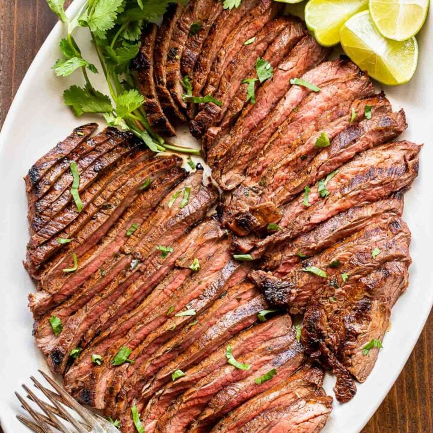

Carne Asada recipe

Description:
Carne asada is grilled and sliced beef, usually skirt steak, flap steak, or flank steak though chuck steak can also be used. It is usually marinated then grilled or seared to impart a charred flavor. Carne asada can be served on its own or as an ingredient in other dishes
ingredients
- ½ cup chopped fresh cilantro leaves
- ⅓ cup olive oil
- ¼ cup reduced sodium soy sauce
- ¼ cup freshly squeezed orange juice
- 2 tablespoons freshly squeezed lime juice
- 4 cloves garlic, minced
- 1 jalapeno, seeded and diced
- 1 teaspoon ground cumin
- Kosher salt and freshly ground black pepper, to taste
- 1 ½ pounds flank steak
Steps
- In a medium bowl, combine cilantro, olive oil, soy sauce, orange juice, lime juice, garlic, jalapeno, cumin and 1 teaspoon pepper; set aside 1/2 cup of the mixture in the refrigerator until ready to serve.
- In a gallon size Ziploc bag or large bowl, combine steak and remaining cilantro mixture; marinate for at least 4 hours to overnight, turning the bag occasionally. Drain the steak from the marinade.
- Preheat grill to medium high heat. Using paper towels, pat both sides of the steak dry; season with salt and pepper, to taste.
- Add steak to grill, and cook, flipping once, until desired doneness, about 6 minutes per side for medium rare. Let rest 5 minutes.
- Thinly slice steak against the grain and serve with reserved 1/2 cup cilantro mixture.